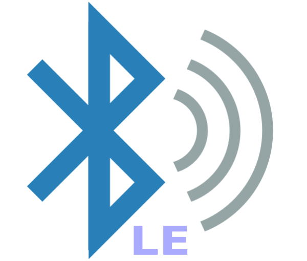

<!--
  Generated template for the DevicePage page.

  See http://ionicframework.com/docs/components/#navigation for more info on
  Ionic pages and navigation.
-->
<!-- <ion-header>

  <ion-navbar>
    <ion-title>Device</ion-title>
  </ion-navbar>

</ion-header>


<ion-content padding>

</ion-content> -->

<ion-header class="ion-nav">
  <ion-navbar>
    <ion-title>KM-Tag</ion-title>
    <ion-title>{{device.id}}</ion-title>
  </ion-navbar>
</ion-header>
<!-- <ion-navbar *navbar>
  <ion-title>{{device.name}}</ion-title>
</ion-navbar> -->
  <ion-content padding>
      
      <!-- <ion-grid> 
        <ion-row> 
          <ion-col>
            <button ion-button color="secondary" outline (click)="changeFar()">Far</button>
          </ion-col>
          <ion-col>
            <button ion-button color="secondary" outline (click)="changeMedium()">Medium</button>
          </ion-col>
          <ion-col>
              <button ion-button color="secondary" outline (click)="changeNear()">Near</button>
          </ion-col>
        </ion-row>
        <ion-row>
            <button ion-button outline color="dark" (click)="schedule()">Test Notification</button>
        </ion-row>
      </ion-grid> -->
      <div style="margin-right: 15%">
        <ion-row>
          <ion-col style="text-align: center">
              
          </ion-col>
        </ion-row>
      </div>   
     <div style="height: 200px;width: 100%;background-color:#666">
           <h1 style="text-align: center; padding: 25%">KM-Tag</h1>
           
     </div>
     
    <ion-list>
      <ion-item>
        <h2>Adjust Your Device Range</h2>
          <ion-range min="-100" max="-44" [(ngModel)]="deviceRssi" pin="true" color="secondary">
            <ion-label range-left>Far</ion-label>
            <ion-label range-right>Near</ion-label>
          </ion-range>
      </ion-item>
      <ion-item>
        <h2 style="color:rgb(20, 228, 13); text-align: center;">Device Range Strength</h2>
          <h2 style="text-align: center;">-44</h2>
          <h1>{{deviceRssi}}</h1>
      </ion-item>
    </ion-list>
    <ion-list>
      <ion-row>
        <ion-col style="text-align: center">
          <h2 style="color:rgb(20, 228, 13)">Click to Search Your BLE Device</h2>
          <button ion-button *ngIf='searchClick==true' (click)='searchPeripheral(device.id)'>Search Device</button>
          <button ion-button *ngIf='searchClick==false'  (click)='stopSearch(device.id)'>Stop Search</button>  
      </ion-col>
      </ion-row>
      
      
    </ion-list>
    <!-- <ion-list inset>
      <ion-item-sliding *ngFor='let characteristic of characteristics' #slidingItem>
        <button ion-item (click)="connectToCharacteristic(device.id,characteristic)">
          <h2>{{characteristic.characteristic}}</h2>
          <p>{{characteristic.properties}}</p>
          <p>{{characteristic.isNotifying}}</p>
          <p>{{characteristic.service}}</p>
        </button>
      </ion-item-sliding>
    </ion-list>
    <ion-spinner *ngIf='connecting==true' name='circles'></ion-spinner> -->
  </ion-content>
